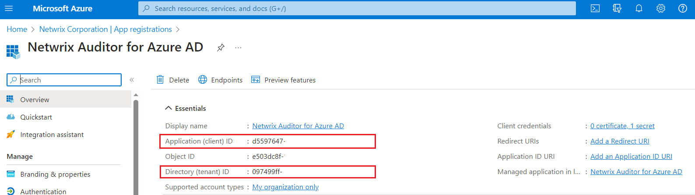

Symptom
When trying to connect to Office 365 Tenant using modern authentication, the following error appears:
Error validating your account’s rights and permissions: Tenant name 'Tenant_name' specified is not a valid DNS name.
Cause
The issue occurred due to incorrect Office 365 tenant credentials provided in Netwrix Auditor.
Resolution
Make sure you provided same parameters in a Netwrix Auditor monitoring plan and Microsoft Office 365 Admin center.
-
Tenant name in Netwrix should equal the Directory (tenant) ID in Microsoft Office 365 Admin center.
-
Modern authentication application ID should equal Application (client) ID in Microsoft Office 365 Admin center.

For additional information on configuring Office 365 tenant, refer to the
following article:
Microsoft 365. Select the data source you want to audit and review the corresponding section.